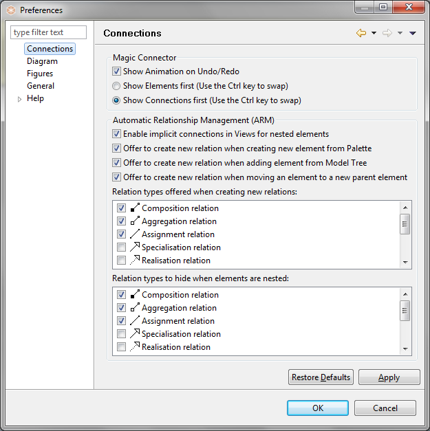

Connections Preferences
Show Animation on Undo/Redo
Choose to show the "puff" animation when undo/redo is performed for an element drawn with the Magic Connector.
Show Elements first (Use the Ctrl key to swap)
When clicking from the Magic Connector onto the empty View canvas show Elements first then Connections in the popup menus. Holding the Ctrl / Command key at the same time will reverse this.
Show Connections first (Use the Ctrl key to swap)
When clicking from the Magic Connector onto the empty View canvas show Connections first then Elements in the popup menus. Holding the Ctrl / Command key at the same time will reverse this.
Allow circular connections
Choose to allow connections that start and end with the same element. See here for more information.
For more information see Container Elements and Nested Element Relationships.
Enable implicit connections in Views for nested elements
If this is enabled then nested parent/child elements are considered to have an implicit connection in a View representing a relationship between the elements in the model.
Offer to create new relation when creating new element from Palette
If this is enabled then when a new element is added from the Palette onto a parent element in the View a dialog appears offering to create a new relationship between the parent and child elements.
Offer to create new relation when adding element from Model Tree
If this is enabled then when a new element is added from the Model Tree onto a parent element in the View a dialog appears offering to create a new relationship between the parent and child elements if one does not already exist.
Offer to create new relation when moving an element to a new parent element
If this is enabled then when an element in a View is dragged onto a parent element in the View a dialog appears offering to create a new relationship between the parent and child elements if one does not already exist.
Relation types offered when creating new relations
Select the types of relationship that will be offered when new implicit connections are created between parent and child elements in a View. The default is Composition, Aggregation and Assignment types.
Relation types to hide when elements are nested
Select the types of relationship connection that will be hidden in a View when there are nested parent and child elements. The default is Composition, Aggregation and Assignment types.